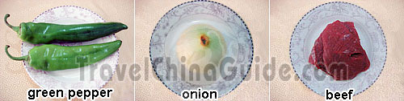
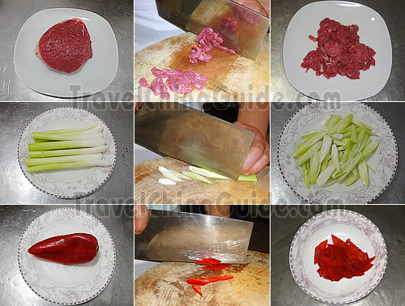
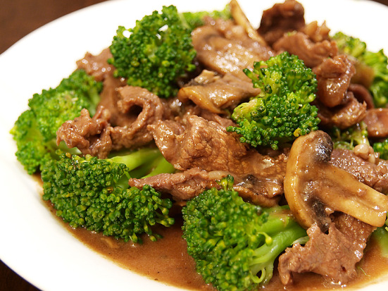

Black Pepper Beef
 Chinese name:(hei hú jiao niú liu)
Chinese name:(hei hú jiao niú liu)Style: Guangdong Cuisine Characteristics: Black pepper beef looks dark in color and tastes strong. The beef in it tastes smooth and tender after frying in the oil; the onion in the dish is fragrant and crispy, while the green pepper makes it more fresh and eye-catching. One of the local characteristic dishes of Guangdong Cuisine, black pepper beef is a good choice for people who like spicy food. Black pepper is a spicy and hot seasoning, which can help people to withstand the cold and the dampness. Besides beef, Chinese people also cook black pepper chicken and black pepper pork. |
|
Ingredients: 2 green peppers 1 small onion 250 g beef fillet salt cooking wine soy sauce oyster sauce ground black pepper meat tenderizer monosodium glutamate (chicken essence/bouillon/stock) tomato ketchup garlic green onion ginger Note: the amount of the seasonings listed above can be appropriately used according to one's personal taste. |

Preparation:
Step 1: Coat the beef by adding in cooking wine, sauce, salt, MSG (or chicken bouillon), egg white and meat tenderizer. Stir well it with chopsticks until you feel it is a bit sticky. Coat Beef Fillet Step 2: Place a wok over high heat until hot. Add some cooking oil, and add in the processed beef fillet slices to be fried for about 2 minutes. Turn off the fire and remove them when they look yellowish white and put them in a dish. Fry Beef Fillet Slices Step 3: Leave some cooking oil in the wok, swirling to coat the sides. Add in half of the mashed green onion, oyster sauce and tomato ketchup. Stir-fry over high heat for about 30 seconds. Then, add in the fried beef fillet slices and stir-fry for 1 minute. And in some soy sauce and black pepper to be stir-fried for about 20 seconds. Pick out them when the beef fillet slices turn dark brown. Stir-fry Fried Beef Slices Step 4: Turn on the heat. Add some cooking oil again. Add in the left mashed green onion, ginger and garlic when the oil is hot. Stir-fry it for about 20 seconds until fragrant. Add in green pepper strips and onion pieces to be stir-fried for 1 minute. Add in some salt and MSG (or chicken essence). Stir-fry for 10 seconds again. Add in the stir-fried beef and stir it together with the others for 2-3 minutes. Stir-fry Green Pepper and Onion |
Braised Beef Fillet with Scallion
 Chinese name:(jing cong bào niú ròu)
Chinese name:(jing cong bào niú ròu)Style: Fujian Cuisine Characteristics: Braised Beef Filet with Scallion is rich and fragrant. The beef tastes smooth and tender, while the savory aroma of the scallion will lead one's appetite. Beef is rich in protein and amino acids, while scallion is a good dressing for health preserving, and is appropriate for cooking with all kinds of meat to enhance the flavor. The combination of braised beef filet with scallion has a satisfying taste that is fragrant, with the overtone of the appetizing aroma of the scallion. |
|
Ingredients: 4-5 scallion (green onion) stalks beef fillet, 250 g 1 fresh red chili ginger slices garlic slices salt cooking wine soy sauce wet corn starch (made of cornstarch and water) white sugar Note: the amount of the seasonings listed above can be appropriately used according to one's personal taste. |

Preparation:
Step 1: Marinate the beef with cooking wine, soy sauce and white sugar. Stir it with a spatula or chopsticks until well mixed. Let it stand for 10-15 minutes. Salt the Beef Fillet Slices Step 2: Place a wok over high heat until hot. Add some cooking oil, and add in the marinated beef fillet slices, and fry for about 2 minutes to brown them and seal in the juices. Remove from the wok and set aside. Fry the Processed Beef Fillet Step 3: Add some cooking oil to the wok again, and swirl it around to coat the sides. Add in the ginger and garlic slices, red chili cubes, and scallion sections. Stir-fry over high heat for about 30 seconds until fragrant. Stir-fry the Scallion, Ginger and Garlic Slices Step 4: Add in some salt, white sugar, soy sauce and wet cornstarch. Stir-fry for 30 seconds. Add in the fried beef fillet slices, and stir-fry for 2-3 minutes. Turn off the heat. |
Beef Broccoli
|

Ingredients: 3 tablespoons cornstarch, divided 1/2 cup water, plus 2 tablespoons water, divided 1/2 teaspoon garlic powder 1 lb boneless round steak or 1 lb charcoal chuck steak, cut into thin 3-inch strips 2 tablespoons vegetable oil, divided 4 cups broccoli florets 1 small onion, cut into wedges 1/3 cup reduced sodium soy sauce 2 tablespoons brown sugar 1 teaspoon ground ginger hot cooked rice Directions:
|